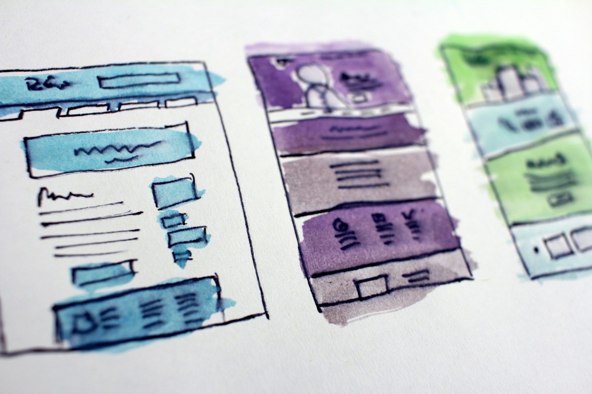
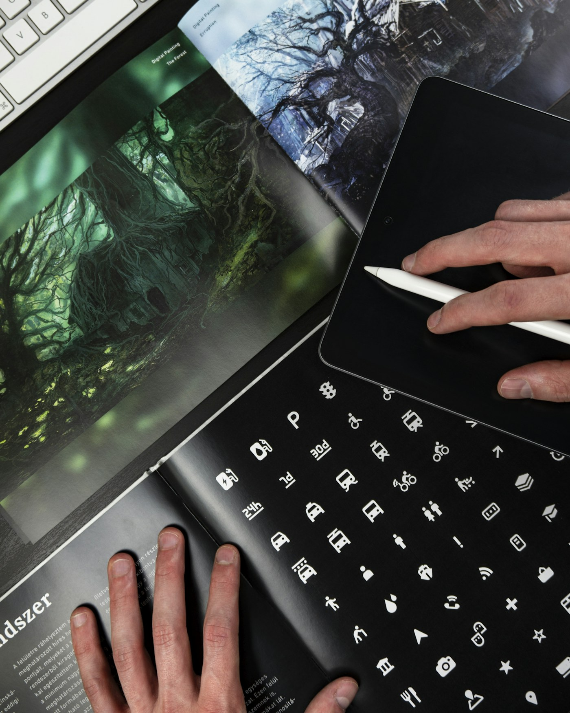
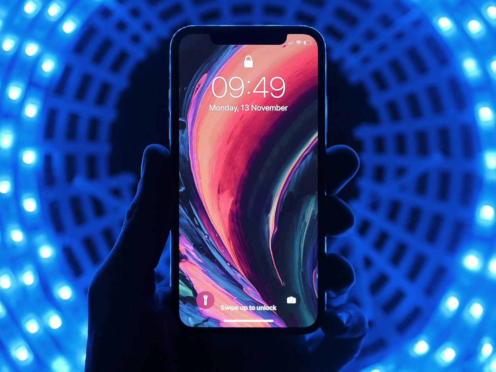
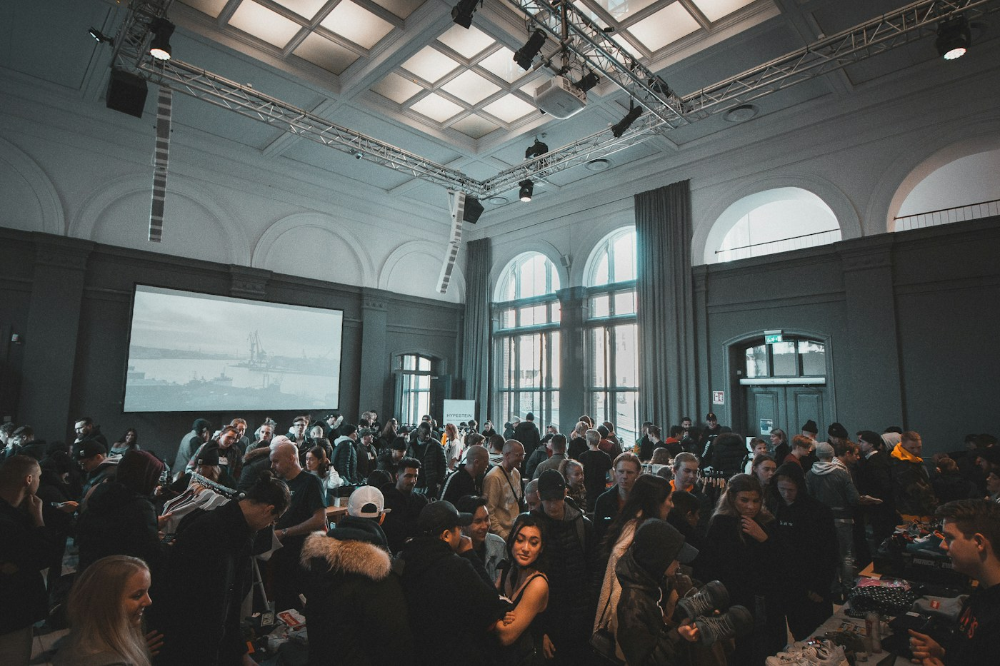

A field guide to the flexible web
Good design
knows how to move.
Responsive design lets a site feel at home on every screen, from a pocket-sized phone to the widest desktop.
Explore the principles01 — MAKE ROOM
Start with
the fluid.
Build layouts that stretch and settle. Relative units and flexible grids make room for the content before a device ever enters the picture.


A good grid is a guide,
not a cage. ↗

FIT THECONTENT
02 — FIND THE SHIFT
Breakpoints
with purpose.
Don't chase device sizes. Add a breakpoint when the design asks for one: when a line gets cramped, a menu runs out of room, or a column no longer earns its space.
Let the content call the change.
03 — KEEP IT CLEAR
Media that
makes sense.
Images should adapt without losing their story. Keep proportions intentional, crop with care, and choose the right size for the screen.
Keep exploring